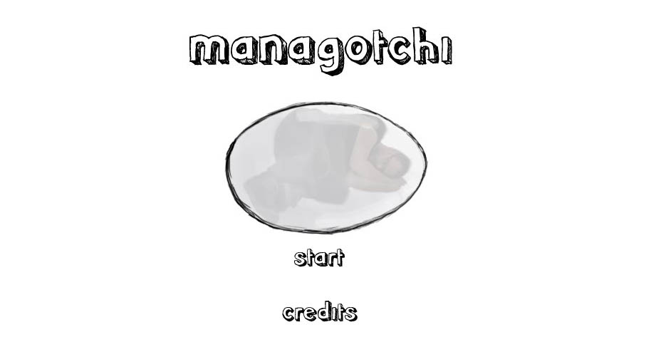
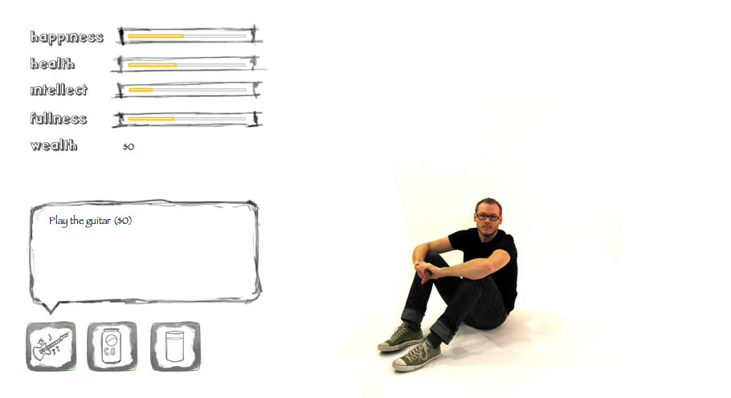
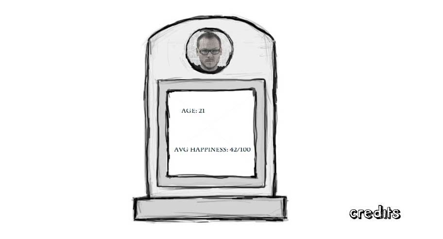

ManagotchiAbout the GameManagotchi was created as a part of Masters Degree project at the Center For Digital Media. Managotchi is considered as a digital pet and is a turn-based strategy game where the user becomes a parent of said Managotchi, by making smart, informed choices if they want Managotchi to live a full and healthy life. Our focus was also on strongly developing the character of Managotchi, as well as enforcing his relationship with his parent/user.Our challenge to the user/parent is to keep their Managotchi alive, by providing them a limited number of choices of a limited amount of items, each properly weighted against some sort of HUD meters. These meters include Health, Starvation (which is termed as “Fullness”), his level of intelligence and his relative overall happiness. What could be great for Managotchi’s happiness (playing video games) may not be great for his intellect, and vice-versa (reading schoolbooks). A plenty of these types of equations have been incorporated into the game to keep all the four parameters in equilibrium. Between Managotchi's birth and death he passes through four life stages childhood, adolescence, adulthood and oldage. Each life stage will provide various options relevant for that particular stage, for eg; Eating Baby Food is available only in the childhood stage. Duration: 6 Weeks Team Size: 7 Click here to raise your managotchi. My Role & ResponsibilityAs a team member, I
Achievement
|
    |